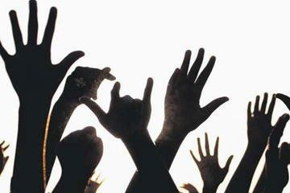

DON
HISTOIRES DE LANGAGES...
La langue des signes, un code gestuel
Dans l’Antiquité, l’intelligence était étroitement liée à la parole. Aristote pensait que quelqu’un qui ne parle pas, ne peut pas penser. Les sourds, isolés, n’ont pu enrichir leurs langues signées et ont dû se contenter d’une gestuelle simpliste. De ce fait, ne disposant pas d’une langue élaborée et ne bénéficiant pas d’éducation, ils passaient parfois pour simples d’esprit.

Les années 80 : le réveil sourd
Durant les années 1980, se produit ce que les sourds appellent le « réveil sourd ». La langue des signes commence à reconquérir ses lettres de noblesse avec William Stokoe, linguiste, qui étudie la langue des signes comme une véritable langue. Des chercheurs en linguistique et en sociologie tels que Christian Cuxac et Bernard Mottez poursuivent ce travail et mettent en avant la culture sourde qui y est rattachée.
